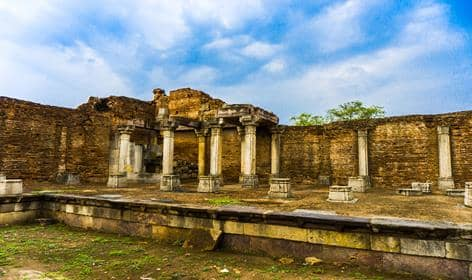

Welcome To Godhra...

Land Of Cow
Godhra is a municipality in Panchmahal district in Indian state of Gujarat. It is the administrative headquarters of the Panchmahal district. Originally the name came from gou which means "cow" and dhara- which have two meanings depending on how you pronounce the word: 'dharaa' means a feminine thing or person that "holds" something and it usually means"land", and the other pronunciation is 'dhaaraa' in which means "flow". However, the second pronunciation is not popular nor is usually associated with this word.Hence, 'Godhra or Godharaa' means the Land of the Cow.
Godhra is widely known in India and internationally for being the starting point of the 2002 Gujarat riots. Statewide religious riots between Hindus and Muslims began after the Godhra train burning incident near the Godhra railway station on 27 February 2002, where about 59 train passengers were burnt alive.It was in Godhra that Vallabhbhai Patel first met Gandhi in 1917 and was subsequently drawn into the Indian freedom struggle.
Godhra is a road and rail junction and a commercial centre for timber and agricultural produce. Industries include oilseed pressing, flour milling, and glass manufacture.As of the 2011 India census, Godhra had a population of 143,644. Males constitute 51.67% of the population and females 48.32%. Godhra has an average literacy rate of 87.51%, higher than the national average of 74.04%. Male literacy is 92.25%, and female literacy is 82.44%
As of 2001 India census, Godhra had a population of 121,852. Males constitute 52% of the population and females 48%. Godhra has an average literacy rate of 73%, higher than the national average of 59.5%. Male literacy was 79.5%, and female literacy was 64.5%.In 1901 the population was 20,915.
Famous Places in Godhra City
- Ratan Mahal Wildlife Sanctuaries
- Umbergaon Beach
- Porbandar Wildlife Sanctuary
- Udvada Beach
- Sun Temple
Godhra City Famous Food Hotel
- Anapurna Restaurant
- Krishna Dining
- Shreenath Hotel
- Mazedaar Restaurant
© Copyright Reserved
Go To Main Page